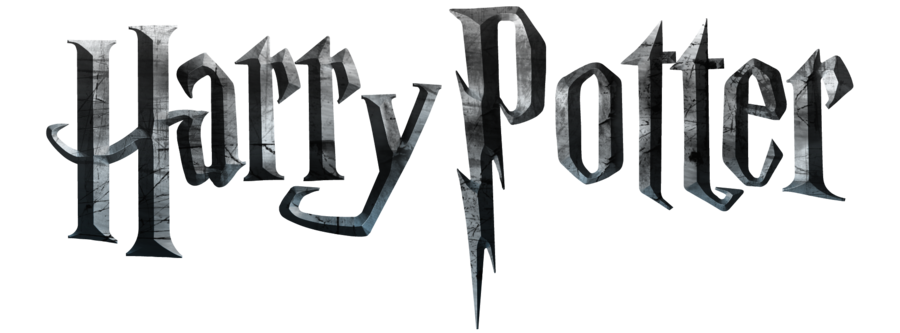

<nav class="navbar navbar-expand-lg navbar-dark bg-dark header">
  <div class="container-fluid">
    <div class="collapse navbar-collapse" id="navbarSupportedContent">
      <ul class="navbar-nav me-auto mb-2 mb-lg-0">

        <!--go Home -->
        <li class="nav-item" routerLinkActive="activo">
          <a class="nav-link" aria-current="page" (click)="goTo('/', false)"><i class="fa-solid fa-house"></i></a>
        </li>

        <!-- ShortCuts to navigate to another components (wizard-Objects-Creatures-Places)-->
        <li *ngIf="!isHome" class="nav-item" style="position: absolute; right: 15px;" routerLinkActive="activo">
          <button class="nav-link" [disabled]="comeBack == wizardScreenDescActive || comeBack == wizardScreenActive" (click)="goTo(goToWizardsCategories)"><i class="fa-solid fa-bolt"></i></button>
        </li>

        <li *ngIf="!isHome" class="nav-item" style="position: absolute; right: 90px;" routerLinkActive="activo">
          <button class="nav-link" [disabled]="comeBack == objectsScreenDescActive || comeBack == objectsScreenActive" (click)="goTo(goToObjectsCategories)"><i class="fa-solid fa-flask"></i></button>
        </li>

        <li *ngIf="!isHome" class="nav-item" style="position: absolute; right: 40px;" routerLinkActive="activo">
          <button class="nav-link" [disabled]="comeBack == creaturesScreenDescActive || comeBack == creaturesScreenActive" (click)="goTo(goToCreaturesCategories)"><i class="fas fa-paw"></i></button>
        </li>

        <!-- Button back from list -->
        <li *ngIf="comeBack == wizardScreenActive" routerLinkActive="activo">
          <a class="nav-link" aria-current="page" (click)="goTo(goToWizardsCategories)"><i
              class="fa-solid fa-backward-step"></i></a>
        </li>
        <li *ngIf="comeBack == objectsScreenActive" routerLinkActive="activo">
          <a class="nav-link" aria-current="page" (click)="goTo(goToObjectsCategories)"><i
              class="fa-solid fa-backward-step"></i></a>
        </li>
        <li *ngIf="comeBack == creaturesScreenActive" routerLinkActive="activo">
          <a class="nav-link" aria-current="page" (click)="goTo(goToCreaturesCategories)"><i
              class="fa-solid fa-backward-step"></i></a>
        </li>

        <!-- Button back from Description screen-->
        <li *ngIf="comeBack == wizardScreenDescActive" routerLinkActive="activo">
          <a class="nav-link" aria-current="page" (click)="goTo('',true)"><i
              class="fa-solid fa-backward-step"></i></a>
        </li>
        <li *ngIf="comeBack == objectsScreenDescActive" routerLinkActive="activo">
          <a class="nav-link" aria-current="page" (click)="goTo('',true)"><i
              class="fa-solid fa-backward-step"></i></a>
        </li>
        <li *ngIf="comeBack == creaturesScreenDescActive" routerLinkActive="activo">
          <a class="nav-link" aria-current="page" (click)="goTo('',true)"><i
              class="fa-solid fa-backward-step"></i></a>
        </li>
      </ul>
      <div class="container-logo">
        
      </div>
    </div>
  </div>
</nav>